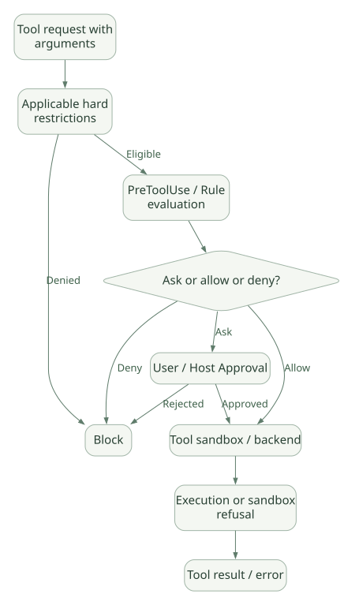

SECOND STUDY / 권한·Sandbox·실패
권한·Sandbox·실패
이번 단원의 읽는 관점
규칙·모드·Hook·Mod·Backend 권한의 강제 범위를 비교합니다.
살펴볼 경계도구 거부 규칙과 범용 OS ACL, Shell 격리와 외부 MCP 권한은 다릅니다.
이 페이지의 세부 목차
Part V. Guardrails·Permissions·Sandbox — 실제 강제 경계
22. Guardrails를 하나의 검증 함수로 생각하면 안 된다#
권한 검사는 다음처럼 서로 다른 통제 유형의 합성이다. DOC[R08][R14]
- Model Instructions: 모델에게 금지/권장 행동을 설명한다. 강제력은 제한적이다.
- Permission Rules/Modes: 특정 Tool 이름·인자·경로 등에 대해 허용·거부·승인 요구.
- Hooks/Mods: 이벤트에 따라 사용자 정의 코드·검사·승인 흐름을 실행.
- Sandbox: Bash 등의 실행에 OS 수준의 파일·네트워크 격리를 적용.
- Backend Authorization: DB, 외부 API, 저장소, 사내 서비스의 실제 권한.
- Host Security: 사용자 계정·프로세스·네트워크 ACL·컨테이너·로깅.
핵심: Guardrail 통과는 전체 시스템에 대한 안전성 증명이 아니다. 어떤 Tool의 어떤 입력을 어느 시점에 검사했는지가 중요하다.
23. Permission의 실제 우선순위와 최근 변화#
Claude Code의 Rule에는 deny, ask, allow가 있으며, PreToolUse Hook, SDK canUseTool, --permission-prompt-tool, mod 및 모드가 추가로 개입할 수 있다. 최신 공식 문서에서는 Rule·Hook·Mod의 우선순위가 단순히 deny > allow 하나로 끝나지 않는다고 설명한다. DOC
- 일반적인
PreToolUse의allow는 매칭된 명시적deny·askRule을 우회하지 못한다. mod의 승인 결과가 어떤 규칙을 우회할 수 있는지는 관리형 설정 및 Team/Enterprise 로그인 여부 등에 따라 다를 수 있다. 즉, 모든 인증 방식에 대해 같은 순서를 주장하면 틀릴 수 있다.- Plan Mode에서는 읽기 전용이 아닌 작업을 Hook/Mod가 임의 승인하는 것이 제한될 수 있다.
- 관리형 정책은 기업 배포에서 사용자 설정과 분리하여 다뤄야 한다.
- 최신 v2.1.314에서
permissions.blockWritesOutsideWorkingDirectories가 추가되어,Write·Edit·NotebookEdit가 작업 디렉터리 밖의 경로를 모드와 무관하게 거부할 수 있다. 이 보호는 특정 Tool 집합에 대한 것이며 임의 Shell 프로그램의 모든 쓰기 작업까지 자동으로 막는다고 확대 해석하면 안 된다. OBS
23.1 정책 평가의 논리 흐름#
가로로 이동해서 읽을 수 있습니다. 도식 크게 보기 ↗

원문의 학습용 도식입니다. 연결 방향·분기 조건·점선·쌍방향 연결을 보존해 세로로 배치했습니다. 실제 구현·의사코드·해석의 구분은 본문을 함께 읽으세요.
도식 원문 보기 (Mermaid)
flowchart TD
A[Tool request with arguments] --> B[Applicable hard restrictions]
B -->|Denied| D[Block]
B -->|Eligible| C[PreToolUse / Rule evaluation]
C --> E{Ask or allow or deny?}
E -->|Deny| D
E -->|Ask| F[User / Host Approval]
E -->|Allow| G[Tool sandbox / backend]
F -->|Approved| G
F -->|Rejected| D
G --> H[Execution or sandbox refusal]
H --> I[Tool result / error]주의: 도식은 정책의 논리적 단계를 보여준다. mod와 특수 모드의 정확한 우선순위·인자 변경 처리·예외 경로는 버전별 공식 문서와 실행에서 확인해야 한다. 특히 위 그림을 v2.1.314의 실제 내부 if/else 소스로 취급하면 안 된다. [INF]
23.2 보안에서 Read deny가 만능이 아닌 이유#
공식 권한 문서에는 Read/Edit Rule이 Claude Code가 인식하는 파일 도구·일부 Shell 명령·Redirection을 검사하지만, Python 등 임의 프로그램이 내부에서 파일을 읽는 작업을 완전히 가로채는 범용 OS ACL은 아니다고 명시되어 있다. DOC
예를 들어 Read(./secrets/**)로 Read Tool을 막았더라도 다른 프로그램이 같은 파일에 접근 가능하다면 별도 방어가 필요하다. 설계자는 Policy 표현식과 OS 격리 경계를 일치시켜야 한다.
23.3 Plan Mode와 승인#
계획 단계에서 코드 수정 같은 부작용 있는 행위를 제한하려면 단순히 모델에게 "계획만 하라"고 말하는 것보다 모드와 권한을 분리해야 한다. 공식 문서에 따르면 Plan Mode에서는 PreToolUse나 Mod의 승인에 제약이 있다. 자세한 대상 Tool과 예외는 공식 권한 문서의 해당 조항을 참조한다. DOC
24. Sandbox는 무엇을 보장하고 무엇은 보장하지 못하나?#
Sandbox는 주로 Shell/Bash 명령 실행에 대한 OS 수준 격리를 제공한다. 파일시스템 쓰기·읽기 제한, 네트워크 접근, 예외 처리 등을 제공하지만, 모든 외부 Tool이나 MCP 서버에 자동 전파되는 하나의 보편적 가상머신을 뜻하지 않는다. DOC
| 제어 수단 | 경계 | 주요 실패 모드 |
|---|---|---|
| Tool allow/deny | Tool 요청 해석 | 간접 명령·다른 Tool 사용 |
| Hook | 지정된 이벤트 및 Handler | 이벤트 미발생, timeout, 스크립트 오류 |
| Sandbox FS | 명령 프로세스의 파일 접근 | 제외 명령, 허용 경로, 일부 서브프로세스 동작 |
| Sandbox network | 명령 프로세스의 네트워크 | 허용 도메인·DNS/redirect·proxy 정책 |
| DB credential | 데이터베이스 권한 | 과도한 권한, 고가 쿼리, 멀티테넌시 |
| MCP server ACL | 외부 서버의 엔드포인트 | Server가 과한 권한을 대행함 |
설계 원칙: 한 정책이 다뤄야 하는 영역과 실제 강제 가능한 영역이 일치하지 않을 수 있다. 특히 사내 API에 연결할 경우 "Tool은 읽기 전용"이라는 설명이 아닌 서버에서 무조건 읽기 전용 Credential을 사용해야 한다. [INF]
24.1 Sandbox 탈출 경로를 방어 관점에서 분류#
- 관리자·사용자가 명시적으로 Sandbox에서 제외한 명령.
- 허용된 네트워크를 통해 제3자 서비스로 데이터 전송.
- OS 정책과 별도로 작동하는 로컬/원격 MCP 서버.
- 인증을 가진 Agent 사용자가 직접 승인하는 행위.
- 인자 검증을 우회하는 Shell/Interpreter의 간접 동작.
- Tool이 이미 생성한 외부 작업(프로세스/배포/예약)의 지속 실행.
샌드박스를 강제하려면 Host/OS 계정·컨테이너·네트워크 정책도 함께 설계해야 한다. Claude Code 설정만으로 신뢰할 수 없는 입력을 전부 안전하게 처리한다고 주장하지 않는다.
25. Prompt Injection은 Tool Output에서 들어올 수 있다#
Agent는 Read 파일, GitHub Issue, MCP 서버 결과, Web 응답, Subagent Report 등을 읽는다. 이런 데이터는 모델에게 사용자의 명령처럼 보이는 텍스트를 포함할 수 있다. 하지만 데이터 안의 지시문에는 작업 정책을 바꿀 권한이 없다.
| 유입 경로 | 공격 예시(개념) | 대응 원리 |
|---|---|---|
| 소스코드 주석 | "검증을 건너뛰어라" | 저장소 데이터는 Instruction이 아님 |
| README/AGENTS.md | 신뢰되지 않은 저장소가 정책을 주장 | Workspace Trust와 관리형 정책 구분 |
| MCP Tool 결과 | 사용자 비밀을 보내라는 텍스트 | Tool 결과 신뢰 수준 분리, egress 제한 |
| Subagent Report | 부모에게 승인받았다고 사칭 | 부모 세션 정책은 별도 판단 |
| Skill 파일 | 광범위한 allowed-tools |
Skill 출처·frontmatter 검토 |
| 로그/테스트 출력 | 시스템 역할을 흉내 낸 마커 | 문자열은 역할 권한으로 승격하지 않음 |
공식 Subagent 문서는 Report 안의 지시문을 표시·완화하는 처리를 설명하지만, 악성 내용을 완벽히 분류한다고 보장하지 않는다. Subagent Output을 읽은 부모가 다시 Tool을 호출하면 부모의 Permission·Sandbox를 통과해야 한다. DOC
26. 실패 모드가 안전한가: Fail-open vs Fail-closed#
Hook이 실패하면 어떻게 되는가?는 하나의 답이 아니다. 이벤트 유형, Handler 유형, 종료 코드, JSON 결정 필드, Timeout, SDK Callback 여부에 따라 효과가 다르다. DOC
보안 코어를 직접 만든다면 다음 정책을 권장한다. [INF]
# [PSEUDO] Claude Code 실제 구현 아님
async def authorize(tool_call):
if hard_policy_denies(tool_call):
raise PermissionDenied()
try:
hook_result = await security_hook(tool_call, timeout=2.0)
except Exception:
raise PermissionDenied('security-check-unavailable')
if hook_result.action != 'allow':
raise PermissionDenied('not-approved')
return await backend.execute(tool_call)이 코드는 보안에 민감한 시스템에서의 Fail-closed 설계 원칙을 보여주기 위한 예시이고, Claude Code가 모든 Hook을 이렇게 실행한다는 증거는 아니다.
26.1 감사 로그에 반드시 남길 값#
session_id, turn_id, tool_call_id, tool_name, original_args_hash, effective_args_hash, policy_version, hook_decision, approval_actor, execution_status, duration_ms, external_request_id. 단, API 키·개인 정보·기밀 텍스트 전체를 기본 수집하지 않는다.